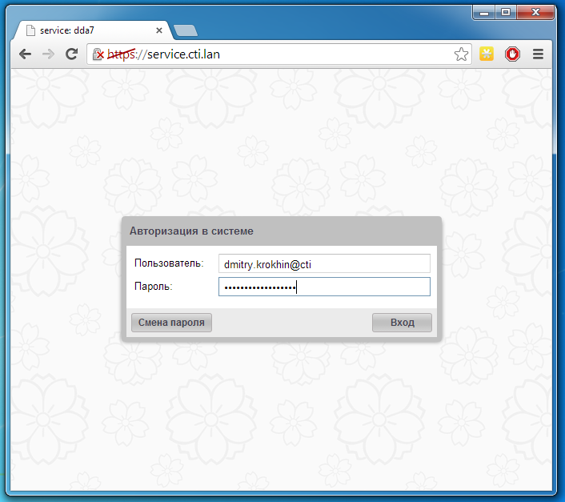
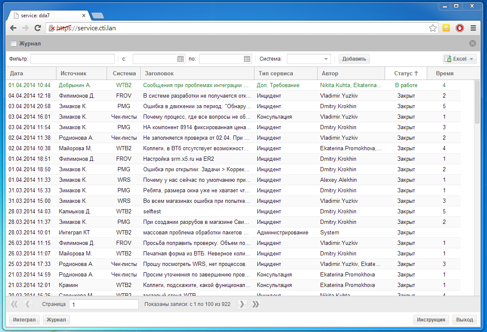

Назначение модуля
Время от времени нужно предоставить отчет по запросам на обслуживание систем.
Проанализировать вручную всю входящую и исходящую почту за период невозможно.
Решение - сделать удобную систему регистрации инцидентов, чтобы сотрудник мог потратить
несколько секунд на то, чтобы зарегистрировать обращение для дальнейшей обработки.
Используемые инструменты
Нашими основными инструментами последнее время являются javascript, php.
Использовать нужно именно их, чтобы заодно разобраться.
Git
Необходимо сразу зарегистрироваться на гитхабе и вести разработку там.Для того чтобы было легко разобраться с этой системой контроля версий есть замечательный try.github.io
PHP
Можно и вовсе не использовать фреймворки, но с ними будет все же удобней.Я бы рекомендовал обратить внимание на silex.sensiolabs.org.
У него есть связь с Doctrine, чтобы работать с базой данных.
Базу данных можно использовать любую, хоть sqlite.
Sencha ExtJS
Фреймворк для создание пользовательского интерфейса. sencha.com/products/extjsВ нем есть все необходимые виджеты.
Реализация
Вход в систему
Для начала работы пользователю необходимо авторизоваться.Написав адрес приложения, пользователь видит окно авторизации.
Пользователь вводит имя, свой пароль и нажимает кнопку вход.
Затем происходит обращение к серверу, где логин и пароль проверяются
на основе записей в базе данных. Если данные введены неправильно - пользователь видит ошибку.
Если же все хорошо, то страничка обновляется и вместо нее отображается приложение.

Работа с журналом
После успешной авторизации пользователь видит на экране список инцидентов.Пользователь может сортировать список по любой колонке. Для фильтрации данных заполняется поле фильтр,
которое фильтрует по содержимому любой колонки. Для добавления нового инцидента пользователь нажимает кнопку "Добавить".
Для того, чтобы открыть любой инцидент пользователь делает двойной клик по строке.

Работа с инцидентом
После открытия инцидента или нажатия на кнопку добавить отображается форма инцидента.В ней пользователь задает описание проблемы, источник и статус решения. Возможные значения типа сервиса - Инцидент, Администрирование, Консультация.
Затраченное время считется автоматически при редактировании таблицы исполнителей
При нажатии удалить у пользователя спрашивается подтверждение действия
При сохранении необходимо проверить, что заполнены обязательные поля - Источник, Система, Тип инцидента.